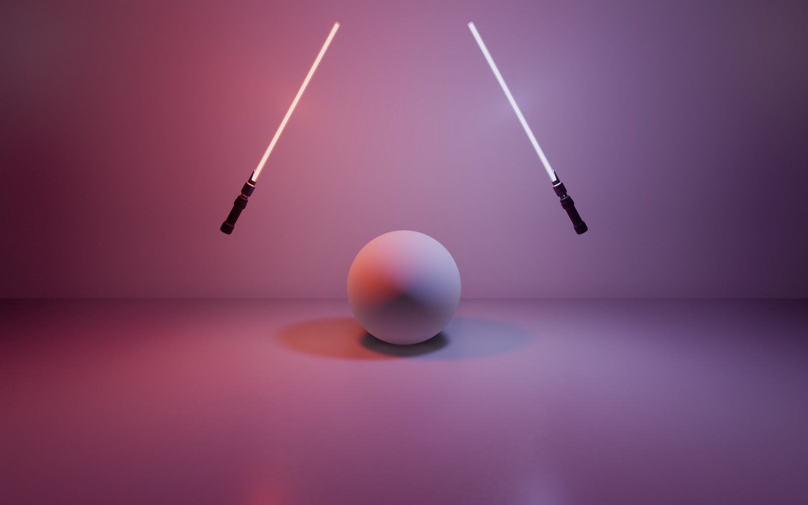
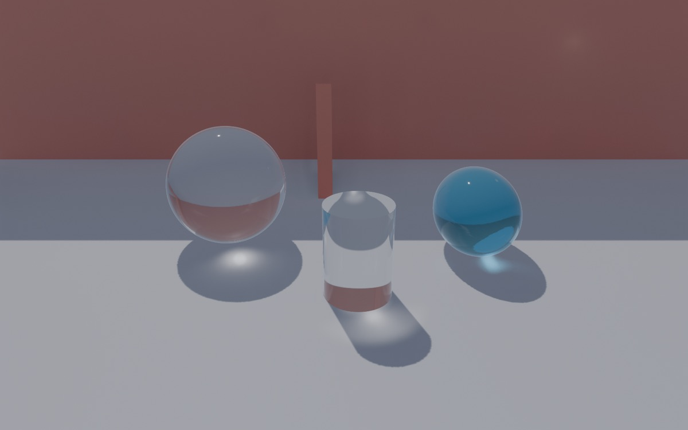
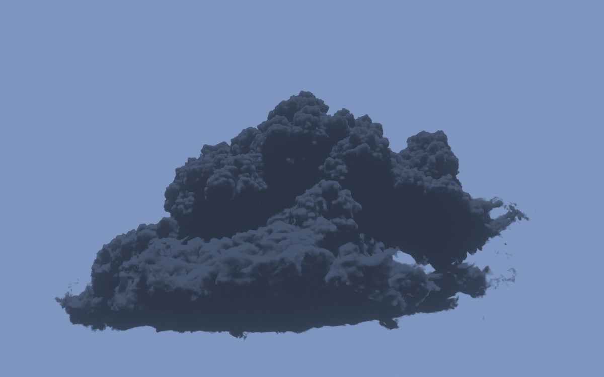
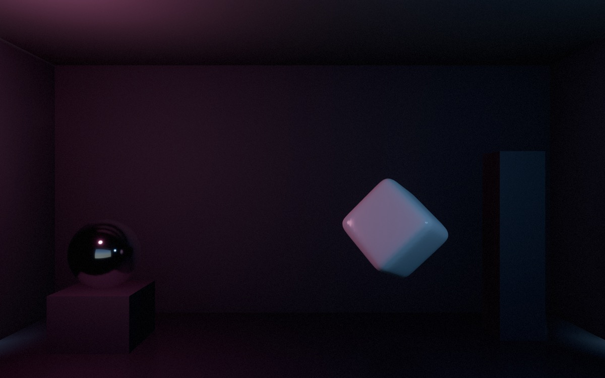
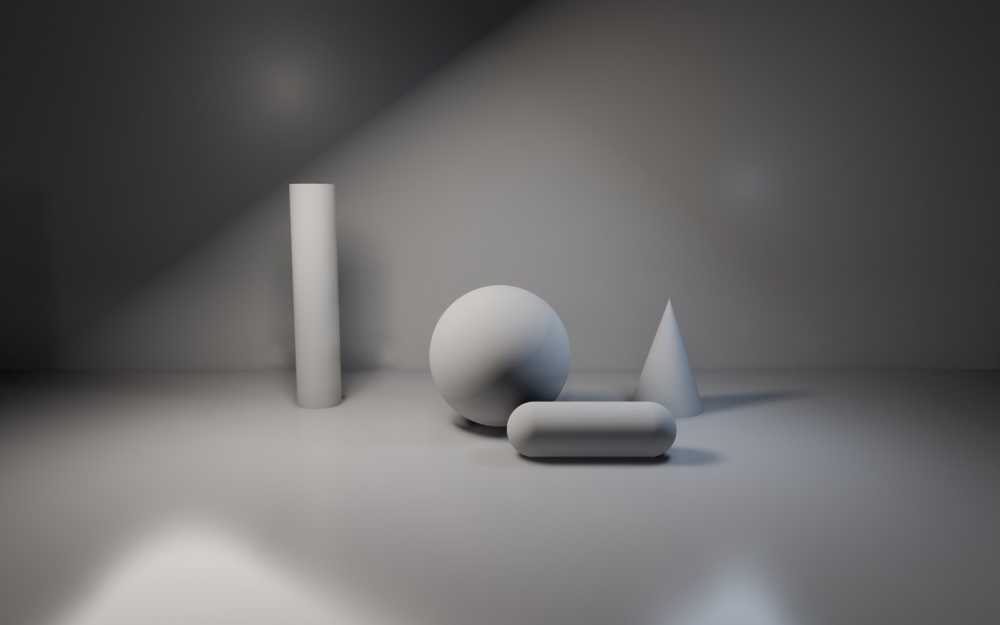
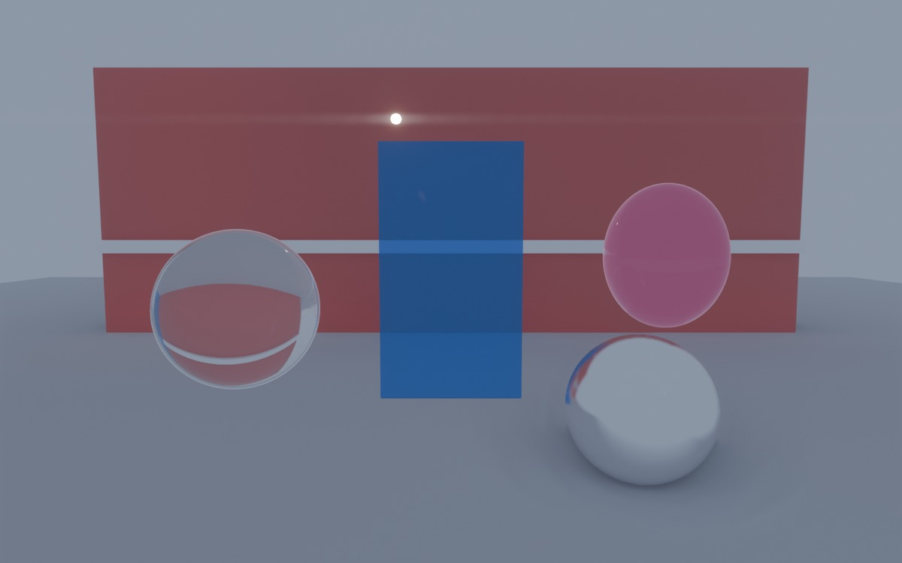
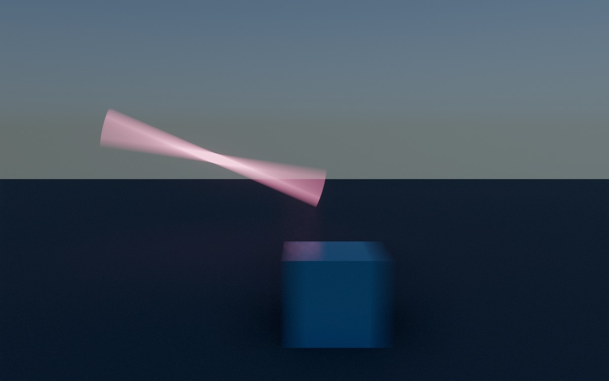

A realtime
OpenUSD engine.
USD at the speed of light.
Free. Open source. Nothing to sign up for.
That’s the Moana Island Scene. On the cheapest laptop Apple sells. With a fan that isn’t there.
There’s no preview mode.
Because there’s nothing to preview. Viewport, outliner, properties, asset browser, modifier stack, sculpting, dope sheet, timeline — one stage, and all of it already rendered.
What you see is the shot
Orbit it, scrub it, retune a shader at 2am. The image keeps up with you, not the other way around.
Your files stay your files
Opens the USD you have. Writes USD back. No import, no export, no proprietary blob in the middle.
Also runs in your hands
The same app on a Mac and an iPad. Gizmos and pie menus built for fingers, not bolted onto a mouse.
Nothing is baked
A modifier stack on the GPU. Reorder it, mute it, change your mind entirely. The mesh underneath never flinches.
Sculpt where it stands
No default sphere. No separate document. Select a mesh and push it around in the scene it belongs to.
Free, as in actually free
No account. No license server. No telemetry. No asterisk anywhere on this page. BSD 3-Clause.
Eight passes, sixty times a second.
The graph gets rebuilt every tick, and the stage only pays for what it actually asked for. Switch a pass off and that time goes somewhere more useful.
The whole realtime stack.
No path tracing, no ray tracing, no waiting. Screen space everything, which is the only way the image keeps arriving while your hand is still on the mouse.
Image based lighting
Prefiltered specular, irradiance and a BRDF LUT off the dome light. Drop a scene in and it already sits in a room.
Light probes
Baked and streamed probes with irradiance volumes, for indirect diffuse in interiors that screen space cannot see.
Soft & contact shadows
Cascades for the sun, shadow maps for punctual and area lights, and contact shadows.
Screen space reflections
Full resolution, and where a ray walks off the edge of the frame the probes and the dome pick it up.
Screen space GI
Horizon scan global illumination, plus GTAO for contact darkening.
Volumetrics
Froxel based participating media for fog, haze, clouds and light shafts, marched in view space.
Temporal AA
Reprojection to resolve edges. It also stabilizes the screen space passes behind it.
Motion blur & DoF
Camera motion blur across shutter:open and shutter:close. Depth of field comes from the USD camera.
Dynamic resolution
Render scale tracks the GPU. It changes only after a sustained budget miss, with hysteresis and a cooldown, so it doesn’t bounce while you orbit.
AgX color pipeline
AgX is the default view transform. ACES, Filmic and Khronos PBR Neutral are one setting away.
Bloom
Energy conserving, and applied before the view transform, so bright things glow instead of going chalky.
Six platforms, one frame graph.
Metal on Apple silicon today. Linux, Windows and Android run on OpenGL now, with Vulkan landing in the graphics layer underneath.
macOS
iOS & iPadOS
visionOS
Windows & Linux
v0.0.8 · macOS and iOS
Version 0.0.8 is available for Mac, iPad and iPhone. The Mac build is notarized, and the iPhone and iPad builds are distributed through TestFlight. Windows and Linux support is in progress.
From nothing to lit.
Take the macOS build, or clone it and run make. Either road ends with your own
USD in a live viewport, inside a minute.
Drag it in
Mount the .dmg and drag the app to Applications. The app is notarized, so macOS opens it without a warning. On iPhone and iPad, install it through TestFlight.
Hand it a scene
File → Open…, or hand a path to --usd. Binary, ASCII, zipped: .usd, .usda, .usdc, .usdz. It doesn’t care which.
There’s no step three
You’re already looking at it. Orbit, scrub, swap a material. Nothing to kick off, nothing to wait on.
# clone, then let the Makefile fetch swift-bundler git clone https://github.com/wabiverse/Akari.git cd Akari # build Kraken and open one of the bundled scenes make run USD_SCENE=Scenes/LensShowcase.usda
# any USD stage you already have make run USD_SCENE=~/scenes/island.usda # deploy to a connected iPhone or iPad make run PLATFORM=iOS DEVICE_ID=<device> \ CODESIGN_IDENTITY=<identity>
Scenes you can render in the next minute.
Real frames, rendered by Akari, graded to match this page. Every one of them ships with the
source as plain .usda — render it, then open the file and find the attribute
that did that.

Saber Showcase
Emissive geometry, bloom, and scatter doing most of the acting.
make run USD_SCENE=Scenes/SaberShowcase.usda

Caustics
Glass bending light onto the floor, which is harder than it sounds.
make run USD_SCENE=Scenes/CausticShowcase.usda

Reflections
Screen space reflections off a wet floor, chrome and gold.
make run USD_SCENE=Scenes/ReflectionShowcase.usda

Clouds
A sky of participating media, marched in froxels.
make run USD_SCENE=Scenes/CloudShowcase.usda

Light Probes
Two colored probes doing the indirect work in a closed room.
make run USD_SCENE=Scenes/ProbeShowcase.usda

Area Lights
Rect, disk and cylinder lights. Soft shadows that actually soften with distance.
make run USD_SCENE=Scenes/AreaLightShowcase.usda

Lens Showcase
Depth of field and bokeh, off the physical camera. Four lenses, one stage.
make run USD_SCENE=Scenes/LensShowcase.usda

Motion Blur
A blade at 720 degrees a second, smeared across a 180 degree shutter.
make run USD_SCENE=Scenes/MotionBlurShowcase.usda
Seven more sit in Scenes/, including sculpting, the modifier stack and the physical
atmosphere.
All of it. BSD 3-Clause.
The engine, the app, the scenes, the shaders. No community edition, no pro tier, no part of it held back.